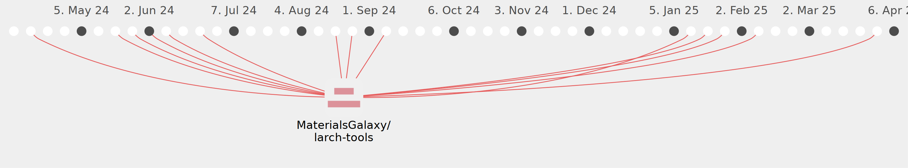

patrick-austin

Commits all-time: 226
Commits last year: 50

(50)
- ef4a544
- e2f7377
- 54c06a3
- b9852a4
- 3fe6078
- bd97591
- 47b59eb
- f924a48
- 6cb9229
- d3aab11
- 71cee2e
- 8a4db43
- e96e1c9
- 57473bb
- 04018b3
- e39fb69
- 3b5430c
- bffbf32
- a8e5247
- de32e5d
- 2ac7f80
- 47b9b5b
- 2871c59
- 4814f53
- e75bf27
- 76b5744
- 8092d97
- be7fc75
- 17b3492
- 3fdfe61
- aa3b81a
- 6e420cf
- 7f52c86
- 1f39412
- 818da82
- fe3f93c
- 0e57224
- 81fda8d
- 14132ae
- 63a5a4c
- 8b12212
- a1e4d66
- 96c5da0
- 78dc1b2
- b870de0
- 51952f1
- 9d0b473
- f5058d0
- 33052c5
- 54a4d6c